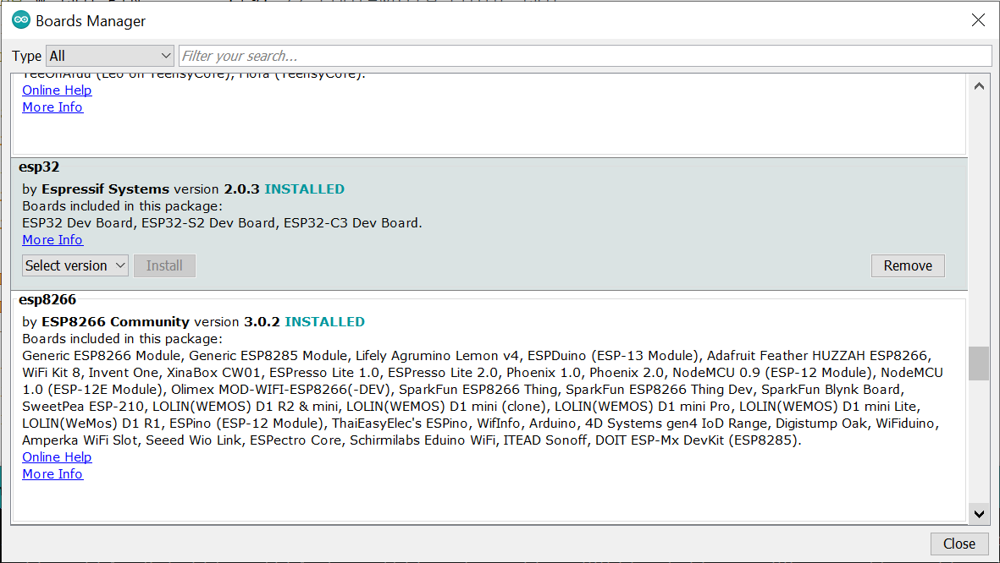

การเริ่มต้นใช้งานชิป ESP32-C3 (RISC-V)#
▷ ESP32-C3#
ESP32-C3 Series (announced: Nov 27, 2020) เป็นชิปไมโครคอนโทรลเลอร์ (MCU: Microcontroller Unit) หรือ MCU-based System-on-Chip ของบริษัท Espressif Systems และแตกต่างจากชิปรุ่น ESP32 / ESP32-S2 / ESP32-S3 ที่ใช้ซีพียูของ Tensilica Xtensa (LX6/LX7) กล่าวคือ ซีพียูของ ESP32-C3 ทำงานได้ตามสถาปัตยกรรมของชุดคำสั่ง (ISA: Instruction Set Architecture) ที่เรียกว่า RISC-V (pronounced "Risk-Five")
นอกจาก ESP32-C3 แล้ว ชิปรุ่นอื่นของ Espressif ที่ใช้ RISC-V CPU Core ได้แก่
- ESP32-C6 (announced: Apr 9, 2021): มีสเปคต่ำกว่า ESP32-C3 แต่รองรับการใช้งาน IEEE 802.15.4 (Thread + Zigbee) และ Bluetooth 5 แต่ไม่รองรับการใช้งาน Wi-Fi
- ESP32-H2 (announced: Aug 2, 2021): มีสเปคใกล้เคียงกับ ESP32-C3 แต่รองรับการใช้งาน Wi-Fi 6 / IEEE 802.11ax
- ESP32-C2 Series (announced: Apr 29, 2022): มีสเปคต่ำกว่า ESP32-C3 เนื่องจากมีการลดขนาดความจุของหน่วยความจำภายใน และวงจรภายในบางรายการ เป็นต้น
ข้อสังเกต:
- RISC-V ISA เป็นสถาปัตยกรรมของชุดคำสั่งที่เปิดเผยและไม่มีค่าลิขสิทธิ์ในการใช้งาน (Open & Free ISA) ซึ่งไม่เหมือนกับ Arm Cortex-M หรือ Tensilica Xtensa ที่มีลิขสิทธิ์การใช้งานสำหรับซีพียูหากมีบริษัทใดต้องการนำไปผลิตชิปของตนเอง
- แต่ RISC-Vก็มีการกำหนดให้เป็นมาตรฐานโดยมี RISC-V International ซึ่งเป็นองค์กรที่ไม่แสวงหากำไรหรือมีคณะทำงานคอยกำกับดูแลในการกำหนดทิศทางการพัฒนา
- การออกแบบและสร้างซีพียูสำหรับ RISC-V ที่เป็น IP (Intellectual Property) Cores โดยบริษัทต่าง ๆ หรือนักออกแบบ เพื่อการนำไปสร้างหรือผลิตเป็นชิปออกมาจำหน่ายนั้น อาจไม่ได้เป็น Open Source / Open Hardware และดังนั้นจึงมีค่าใช้จ่ายสำหรับการนำไปใช้งาน
- อย่างไรก็ตาม RISC-V IP Cores ที่เป็น Open Source / Open Hardware ก็มีเช่นกัน และสามารถนำไปทดลองใช้งานได้ โดยการสร้างเป็นวงจรในชิปประเภท FPGA เป็นต้น
แม้ว่ามีการเลือกใช้ซีพียูที่แตกต่างออกไป แต่ชิป ESP32-C3 ก็มีวงจรรอบข้างซีพียู (On-chip Peripherals) ที่คล้ายกับชิป ESP32 เช่น รองรับการสื่อสารข้อมูลไร้สายด้วยวงจร Wi-Fi (2.4GHz) / Bluetooth 5 (LE) และมีวงจรที่ช่วยในการประมวลผลและสื่อสารข้อมูลที่เน้นความปลอดภัย (Security) ซึ่งเหมาะกับงานด้าน IoT
ESP32-C3 ถูกมองว่าเป็นตัวเลือกใหม่และแทนที่ชิป ESP8266 / ESP8285 ของบริษัท Espressif หากนำไปใช้ในลักษณะที่เรียกว่า Wi-Fi Serial Module ที่ทำงานร่วมกับชิปไมโครคอนโทรลเลอร์ตัวอื่น และใช้ชุดคำสั่งที่เรียกว่า Espressif AT Command Set เนื่องจากมีราคาไม่แพงและประหยัดพลังงานได้ดีกว่าเมื่อเปรียบเทียบกับชิป ESP32 และชิปรุ่นอื่นที่ไม่ได้ใช้ RISC-V CPU Core
รูป: Block Diagram แสดงองค์ประกอบภายในของชิป ESP32-C3
ชิป ESP32-C3 มีแกนซีพียู RISC-V (RV32IMC ISA) อยู่ภายในเพียงแกนเดียว (Single Core) ทำคำสั่งโดยใช้ 4-stage Instruction Pipeline ความเร็วสูงสุด 160 MHz โดยใช้ตัวสร้างสัญญาณ Clock จากภายนอก (40MHz crystal)
RV32IMC ISA
- I = 32-bit Integer Instruction Set (no FPU extension)
- M = Integer Multiplication and Division
- C = Compressed Instructions
ชิป ESP32-C3 มีหน่วยความจำภายในดังนี้
- 384 KB of ROM (Read-Only): เป็นส่วนที่เก็บโปรแกรมสำหรับการเริ่มต้นทำงานของระบบ และฟังก์ชันพื้นฐานต่าง ๆ หรือการทำงานของชิปในระดับล่างของฮาร์ดแวร์ (โดยรวมเรียกว่า ROM Functions) และข้อมูลในหน่วยความจำชนิดนี้ได้ถูกบันทึกข้อมูลมาจากโรงงาน ผู้ใช้ไม่สามารถเขียนข้อมูลลงในส่วนนี้ได้
- 400 KB of SRAM: สำหรับเก็บข้อมูล (Data) และคำสั่งของโปรแกรม (Program Instructions) แต่ส่วนหนึ่งของ SRAM ที่มีขนาด 16 KB จะถูกใช้งานเป็น Cache สำหรับการอ่านข้อมูลและคำสั่งมาจากหน่วยความจำภายนอกในขณะที่ซีพียูทำงาน
- 8 KB of RTC memory: ใช้สำหรับเก็บข้อมูลชั่วคราวและไม่สูญหาย เมื่อซีพียูเข้าสู่โหมดประหยัดพลังงาน (Deep-sleep mode)
- 4 Kbit of eFuse: เป็นหน่วยความจำแบบ Non-volatile / One-time programmable มีวิธีการป้องกันการเขียนหรืออ่านข้อมูลจากภายนอกได้ (Read/write Protection) บางส่วนของหน่วยความจำสามารถเก็บข้อมูลที่ต้องมีการรักษาความปลอดภัย เช่น ใช้ในการเข้ารหัสข้อมูล สำหรับหน่วยความจำแพลช เป็นต้น
- Embedded Flash: ชิปบางรุ่นได้รวมหน่วยความจำแฟลชไว้ในชิปเดียวกัน มีขนาดความจุ 2MB หรือ 4MB
หน่วยความจำภายในชิปของ ESP32-C3 สามารถเข้าถึงได้ผ่านทางบัสของซีพียูทั้งสองประเภท ได้แก่ บัสสำหรับข้อมูล (Data Bus) และ บัสสำหรับคำสั่ง (Instruction Bus) โดยมีการแบ่งตามช่วงของแอดเดรสในแผนผังของหน่วยความจำ (เรียกว่า Memory Address Map) สำหรับหน่วยความจำภายในและภายนอก เช่น
0x0000_0000~0x4000_0000เข้าถึงได้จากบัสสำหรับข้อมูลเท่านั้น0x4000_0000~0x4FFF_FFFFเข้าถึงได้จากบัสสำหรับคำสั่งเท่านั้น0x5000_0000~0xFFFF_FFFFเข้าถึงได้จากบัสทั้งสองประเภท
การเข้าถึงรีจิสเตอร์ต่าง ๆ ของวงจรรอบข้างที่อยู่ภายในชิป (On-chip Peripherals)
จะอยู่ในช่วงแอดเดรส 0x6000_0000 ~ 0x600D_0FFF และเข้าถึงได้ด้วยบัสสำหรับข้อมูล
รายละเอียดในเชิงลึกเกี่ยวกับ ESP32-C3 SoC สามารถศึกษาได้จากไฟล์: ESP32C3 Technical Reference Manual
▷ ตัวเลือกสำหรับการใช้งาน ESP32-C3#
ตัวเลือกที่เป็นฮาร์ดแวร์สำหรับ ESP32-C3 จำแนกได้เป็น 3 ระดับ
- SoCs: เป็นชิปที่บริษัท Espressif ได้ผลิตและจำหน่าย แบ่งออกเป็นกลุ่มย่อย ได้แก่ ESP32-C3 และ ESP8685 อาจมีความแตกต่างกันไปบ้าง เช่น ขนาดของตัวชิป จำนวนขา GPIO การรวมหน่วยความจำ Embedded Flash ไว้ภายในชิป หรือใช้ชิปหน่วยความจำ SPI Flash ภายนอกได้ และขนาดของหน่วยความจำ Flash ช่วงอุณหภูมิในการทำงานของชิป เป็นต้น
- Modules: เป็นโมดูลที่มีลักษณะเป็นแผงวงจร ซึ่งมีชิป ESP32-C3 และวงจรส่วนอื่น เช่น 40MHz crystal และวงจรเชื่อมต่อกับสายอากาศ (Antenna) อยู่บนแผ่น PCB โมดูลพวกนี้อาจมาจากบริษัท Espressif หรือบริษัทอื่น
- Boards: เป็นบอร์ดไมโครคอนโทรลเลอร์ที่ใช้ชิปหรือโมดูลสำหรับ ESP32-C3 อาจมาจากบริษัท Espressif ที่ได้ทำบอร์ดตัวอย่างที่เรียกว่า DevKit ออกมาสู่ตลาดเพื่อนำไปทดลองใช้งาน หรือบอร์ดที่เป็นสินค้าของบริษัทอื่น
ข้อสังเกต:
- แม้ว่าชิป ESP32-C3 มีช่วงของแอดเดรสที่เข้าถึงหน่วยความจำภายนอกสำหรับเก็บโปรแกรมคำสั่งและข้อมูล ได้ไม่เกิน 8MB (program) + 8MB (data) แต่โดยทั่วไปจะเห็นได้ว่า ขนาดของชิปหน่วยความจำ Flash มักจะเป็น 2MB หรือ 4MB ซึ่งน่าจะเพียงพอสำหรับงานโดยทั่วไป
ESP32-C3 SoCs: ESP32-C3 Datasheet
- Family members:
- ESP32-C3: external Flash, 22 GPIO pins
- ESP32-C3FN4: embedded Flash (4MB), 22 GPIO pins
- ESP32-C3FH4: embedded Flash (4MB), 22 GPIO pins
- ESP32-C3FH4AZ: embedded Flash (4MB), 16 GPIO pins
- Chip package: QFN32 (5 x 5 mm^2)
- Temperature range:
- N = Normal (-40 °C .. +85 °C)
- H = High (-40 °C .. +105 °C)
ESP8685 SoCs: ESP8685 Datasheet
- Family members:
- ESP8685H2: 2MB embedded Flash
- ESP8685H4: 4MB embedded Flash
- Chip package: QFN28 (4 x 4 mm^2)
- Note: SPI Flash signals are not bonded out.
- Temperature range: -40 °C .. +105 °C (High)
ESP32-C3 Modules
- Espressif
- ESP32-C3-MINI-1/1U (external Flash)
- ESP32-C3-WROOM-02/02U (embedded Flash)
- ESP8685-WROOM-03/-05/-06 (embedded Flash)
- Ai Thinker
- ESP-C3-12F
- ESP-C3-32S
- ESP-C3-01M
- ESP-C3-13 / ESP-C3-13U
- ESP-C3-M1 / ESP-C3-M1-I

รูป: โมดูล Espressif ESP32-C3 WROOM-02 / 02U (Datasheet)
รูป: Block Diagram ของโมดูล Espressif ESP32-C3 WROOM-02 (PCB Antenna) ที่มีการแยกกันระหว่างชิป ESP32-C3 กับชิป External SPI Flash ภายนอก
▷ ตัวอย่างบอร์ดไมโครคอนโทรลเลอร์ที่ใช้ชิป ESP32-C3#
หลังจากได้มีการเปิดตัวชิป ESP32-C3 ในเดือนพฤศจิกายน ค.ศ. 2020 เป็นต้นมา มีบอร์ด ESP32-C3 ออกมาสู่ตลาดเพื่อให้ผู้ใช้ได้เลือกและทดลองใช้งาน นอกเหนือจากบอร์ดของบริษัท Espressif แล้วยังมีของบริษัทอื่น เช่น Ai Thinker และ Adafruit เป็นต้น ตามที่ได้รวบรวมมาเป็นตัวอย่างดังนี้
ESP32-C3 Boards / DevKits
- Espressif
- Ai Thinker
- Adafruit
- Adafruit QT Py ESP32-C3 WiFi Dev Board [→]
- Wemos.cc
- LOLIN-C3 Mini v1.0.0 [→]
- LilyGo
- M5Stack
- M5Stamp C3 / C3U [→]
- DFRobot
- Beetle-ESP32-C3 RISC-V Core Dev. Board [→]
- MuseLab Tech
- nanoESP32-C3 [→]
รูป: บอร์ด Espressif ESP32-C3 DevKitM-1 และ DevKitC-02
รูป: บอร์ด Wemos ESP32-C3 LOLIN Mini (v1.0.0) [Schematic]
บอร์ด ESP32-C3 LOLIN Mini มี Onboard (Blue) LED
ต่ออยู่ที่ขา GPIO-7 และสำหรับการเชื่อมต่อกับคอมพิวเตอร์ ก็มีคอนเนกเตอร์ USB Type-C
โดยไม่ได้ใช้ชิป USB-to-Serial Bridge ดังนั้นจึงต้องเปิดใช้งาน Built-in USB-CDC
หากต้องการสื่อสารข้อมูลกับเครื่องคอมพิวเตอร์ของผู้ใช้โดยใช้คำสั่ง เช่น Serial.println()
เมื่อกดปุ่ม BOOT ค้างไว้ แล้วกดปุ่ม RST เพื่อรีเซตการทำงานของบอร์ด และเข้าสู่โหมด Device Firmware Upgrade (DFU) คอมพิวเตอร์ของผู้ใช้จะมองเห็น Virtual Serial COM Port และถ้าต้องการรับส่งข้อมูลผ่านพอร์ตนี้ ในขั้นตอนการคอมไพล์โค้ดสำหรับ Arduino Sketch จะต้องเลือก "USB CDC on Boot: Enabled"
รูป: บอร์ด Ai Thinker ESP-C3-13 Kits
จากรูปภาพของบอร์ด Ai Thinker ESP-C3-13 Kits มีการจำแนกออกเป็น 4 รูปแบบ ดังนี้
- (a) C3FN4: normal temperature version (N), embedded 4MB Flash
- (b) C3FN4: normal temperature version (N), embedded 4MB Flash, with IPEX connector for external antenna
- (c) C3FH4: high temperature version (H), embedded 4MB Flash
- (d) C3-2M: normal temperature version (N), external 2MB Flash
เนื่องจากบอร์ดใช้ชิปป CH340 ทำหน้าที่เป็น USB-to-Serial Bridge ดังนั้นคอมพิวเตอร์ของผู้ใช้ จะต้องมีการติดตั้ง CH340/CH341 USB Driver สำหรับอุปกรณ์ตัวนี้ก่อน
รูป: เปรียบบอร์ด WeMos LOLIN C3 Mini (ด้านซ้ายมือ) และบอร์ด Ai Thinker ESP-C3-13 Kit / C3FN4 (ด้านขวามือ)
▷ การเขียนโปรแกรมสำหรับ ESP32-C3#
การเขียนโปรแกรมสำหรับ ESP32-C3 ก็เหมือนกับกรณีของชิป ESP32 รุ่นอื่น ซึ่งมีตัวเลือกดังนี้
- การเขียนโปรแกรมภาษา C/C++ โดยใช้ ESP-IDF: IoT Development Framework for the ESP32 ซึ่งประกอบด้วย SDK และ Toolchain ต่าง ๆ ที่ได้มีการพัฒนาโดยบริษัท Espressif และใช้ FreeRTOS เป็นพื้นฐานในการทำงานของโค้ด
- การเขียนโปรแกรมภาษา C/C++ ด้วย Arduino API ผู้ใช้จะต้องติดตั้ง Arduino-ESP32 Core สำหรับการใช้งานร่วมกับซอฟต์แวร์ Arduino IDE
- การเขียนโปแกรมภาษา Python สำหรับไมโครคอนโทรลเลอร์ ในปัจจุบันมีสองตัวเลือกที่ได้รับความนิยมคือ MicroPython และ CircuitPython ผู้ใช้สามารถดาวน์โหลดไฟล์ .bin สำหรับนำไปใช้ในการติดตั้ง Firmware (โดยใช้โปรแกรม
esptool.py) จำแนกตามบอร์ดไมโครคอนโทรลเลอร์ที่รองรับการใช้งาน
▷ การติดตั้งไฟล์ Firmware สำหรับ MicroPython#
การติดตั้งไฟล์ที่เป็น Firmware (.bin) สำหรับ MicroPython / CircuitPython เพื่อใช้งานกับ ESP32-C3 สามารถทำได้โดยใช้คำสั่ง esptool.py ซึ่งเป็นโปรแกรมภาษา Python ตัวอย่างการทำคำสั่งเพื่อติดตั้งและเขียนไฟล์ไปยังหน่วยความจำมีดังนี้
# install esptool
$ pip install esptool
# show the version of esptool (current version: 3.2)
$ esptool.py version
esptool.py v3.2
3.2
# erase the internal Flash of ESP32 device
$ esptool.py --port PORT_NAME erase_flash
# upload the firmware file (.bin) to the device
$ esptool.py --port PORT_NAME --baud 1000000 write_flash -z 0 FIRMWARE.bin
โดยที่ PORT_NAME จะต้องเป็นชื่อพอร์ตของอุปกรณ์ซึ่งตรงกับบอร์ด ESP32-C3 ในขณะที่กำลังเชื่อมต่อกับคอมพิวเตอร์ และ FIRMWARE.bin เป็นชื่อไฟล์ (ระบุชื่อไฟล์แบบ Full Path Name) สำหรับเฟิร์มแวร์
เมื่อติดตั้งเฟิร์มแวร์ได้สำเร็จแล้ว ก็สามารถใช้ซอฟต์แวร์อย่างเช่น Thonny IDE เป็น Python Editor สำหรับการเขียนโค้ดและเชื่อมต่อกับบอร์ด ESP32-C3 ได้
▷ ซอฟต์แวร์ Arduino สำหรับ ESP32#
หากยังไม่เคยติดตั้งใช้งาน ให้ดาวน์โหลดไฟล์สำหรับการติดตั้งซอฟต์แวร์ Arduino IDE ได้จากเว็บไซต์ https://www.arduino.cc/en/software/ จากนั้นจะต้องติดตั้ง Arduino-ESP32 Core ซึ่งมีขั้นตอนในการติดตั้ง อ้างอิงจากเอกสาร Arduino-ESP32 Project และมีขั้นตอนที่สำคัญดังนี้
- ไปที่เมนู File > Preferences จะมีการเปิดหน้าต่างใหม่ และตรงช่องข้อความ Additional Board Manager URLs: ให้เพิ่มรายการไฟล์ .json ซึ่งเป็น URL ที่ชี้ไปยังไฟล์ .json ใน Github
- ไปที่เมนู Tools > Boards Manager... จะมีการเปิดหน้าต่างใหม่ ให้ค้นหารายการสำหรับ esp32 เลือกเวอร์ชันและกดปุ่ม Install
- สร้าง Arduino Sketch ใหม่ เขียนโค้ด และเลือกบอร์ด ESP32 ให้ถูกต้องและตรงกับอุปกรณ์ที่จะใช้งานจริง ก่อนทำขั้นตอน Build & Upload ตามลำดับ

รูป: การติดตั้งหรืออัปเดทสำหรับ Arduino-ESP32 Core (เวอร์ชันที่ได้ทดลองใช้คือ v2.0.3)

รูป: สาธิตการใช้งาน Arduino IDE และเขียนโค้ดทดสอบการทำงานของบอร์ด WeMos LOLIN C3 Mini
มาดูโค้ดตัวอย่างที่ได้นำมาทดลอง โค้ดนี้สาธิตการใช้คำสั่ง analogWrite()
เพื่อสร้างสัญญาณ PWM (Pulse Width Modulation)
ที่มีการปรับค่า Duty Cycle ของสัญญาณจาก 0 ไปจนถึง 255 แล้วลดลง
ซึ่งจะทำให้ความสว่างของ LED ที่อยู่บนบอร์ดไมโครคอนโทรลเลอร์เปลี่ยนแปลงตามค่า
Duty Cycle
//////////////////////////////////////////////////////////////
// Date: 2022-05-10
// Board: WeMos LOLIN C3 Mini (4MB Flash)
// Arduino-ESP32 Core: v2.0.3
// Espressif ESP-IDF: v4.4.1-1
//////////////////////////////////////////////////////////////
#define PWM_LED_PIN (7) // GPIO-7 onboard LED LOLIN C3 Mini
void setup() {
Serial.begin( 115200 );
Serial.printf( "ESP32 demo: %s\n", ESP.getChipModel() );
Serial.printf( "ESP-IDF version: %s\n", ESP.getSdkVersion() );
pinMode( PWM_LED_PIN, OUTPUT );
digitalWrite( PWM_LED_PIN, LOW );
}
const int N=256; // number of steps for PWM duty cycles
int i=0; // counter variable: 0..(N-1)
void loop() {
// compute a non-negative value based on the sine function
// and scale it up to the range from 0 to 255.
int value = int(256*sin(i*PI/N));
i = (i+1) % N;
analogWrite( PWM_LED_PIN, value );
Serial.printf( "value:%d\n", value );
delay(8);
}
//////////////////////////////////////////////////////////////
โค้ดตัวอย่างถัดไปสาธิตการเชื่อมต่อบอร์ด ESP32-C3 เข้ากับระบบ Wi-Fi AP (Access Point)
และจะต้องกำหนดค่าสำหรับ WIFI_SSID และ WIFI_PASSWD ให้ตรงกับการใช้งานจริง
#include <WiFi.h>
#define WIFI_SSID "xxxxxxx"
#define WIFI_PASSWD "xxxxxxx"
void setup() {
Serial.begin(115200);
while (!Serial){ delay(10); }
Serial.println("ESP32-C3 Mini v1.0.0");
// use WiFi STA (station mode)
WiFi.mode(WIFI_STA);
WiFi.disconnect();
// WiFi Tx power to 11dBm
WiFi.setTxPower( WIFI_POWER_11dBm );
delay(100);
// connect to Wi-Fi AP
WiFi.begin( WIFI_SSID, WIFI_PASSWD );
// wait until Wi-Fi is connected.
while ( WiFi.status() != WL_CONNECTED ){
Serial.print( "." );
delay(500);
}
// show the IP address assigned by DHCP
Serial.printf("\nIP address: %s\n",
WiFi.localIP().toString().c_str() );
}
void loop() {
delay(100);
}
ข้อสังเกต: หากดูจากไฟล์ Schematic ของบอร์ด ESP32-C3 LOLIN Mini v1.0.0 จะเห็นได้ว่า มีการใช้ไอซีควบคุมแรงดันไฟฟ้า ME6211C33 LDO (Low-Drop Out) ที่ให้เอาต์พุต +3.3V แต่จ่ายกระแสสูงสุดได้ไม่เกิน 500mA ดังนั้นการใช้กำลังส่ง Tx Power ในระดับสูงเพื่อเชื่อมต่อผ่าน Wi-Fi (ซึ่งอาจใช้กระแสสูงมากกว่า 300mA ที่กำลังส่งสูงสุด @21 dBm) พร้อมกับการใช้ขา +3.3V ของบอร์ดเพื่อจ่ายแรงดันไฟฟ้าให้อุปกรณ์อื่น อาจมีข้อจำกัดในการใช้งานได้ เช่น ทำให้การทำงานของระบบไม่เสถียร
▷ การใช้งาน WokWi Simulator#
หากต้องการจะลองเขียนโค้ดและจำลองการทำงานของฮาร์ดแวร์ในเบื้องต้น ก็สามารถใช้ Wokwi Online Simulator for ESP32 ได้ ซึ่งรองรับ ESP32 / ESP32-S2 / ESP32-C3 และเขียนโค้ดด้วย ESP-IDF, Arduino, MicroPython / CircuitPython และ Embedded Rust (experimental) — ดูรายละเอียดเพิ่มเติมได้จาก "Wokwi - ESP32 Simulation"
รูป: การสร้างโปรเจกต์ใน WokWi Simulator เพื่อทดลองเขียนโค้ด Arduino และใช้งานร่วมกับบอร์ด ESP32-C3 DevKitM-1
รูป: การจำลองการทำงานของโค้ด Arduino สำหรับ ESP32-C3 สาธิตการควบคุมและเปลี่ยนสีของ RGB LED (NeoPixel) จำนวนหนึ่งดวง และมีขาสัญญาณข้อมูลต่อกับขา GPIO-8
รูป: ตัวอย่างการใช้คำสั่ง analogWrite() เพื่อสร้างสัญญาณ PWM
และแสดงรูปกราฟสัญญาณจากค่าตัวเลขสำหรับ PWM Duty Cycle (ค่าตัวเลขอยู่ในช่วง 0..255)
▷ กล่าวสรุป#
ESP32-C3 เป็นอีกหนึ่งตัวเลือกที่น่าสนใจสำหรับการประยุกต์ใช้งานไมโครคอนโทรลเลอร์ เนื่องจากมีราคาไม่แพง ใช้พลังงานต่ำ สามารถเชื่อมต่อระบบเครือข่าย Wi-Fi และ Bluetooth ได้ แต่ไม่เน้นความเร็วในการประมวลผล ไม่มี Floating-Point Unit (FPU) มีจำนวนขา GPIO ให้ใช้ได้น้อยกว่า ซึ่งถือว่ามีจำนวนค่อนข้างจำกัด แต่ชิปรุ่นนี้สามารถทำงานในโหมดประหยัดพลังงานได้ต่ำกว่า เมื่อเปรียบเทียบกับชิป ESP32 / ESP32-S3 (Dual-Core)
This work is licensed under a Creative Commons Attribution-ShareAlike 4.0 International License.
Created: 2022-05-09 | Last Updated: 2022-05-17